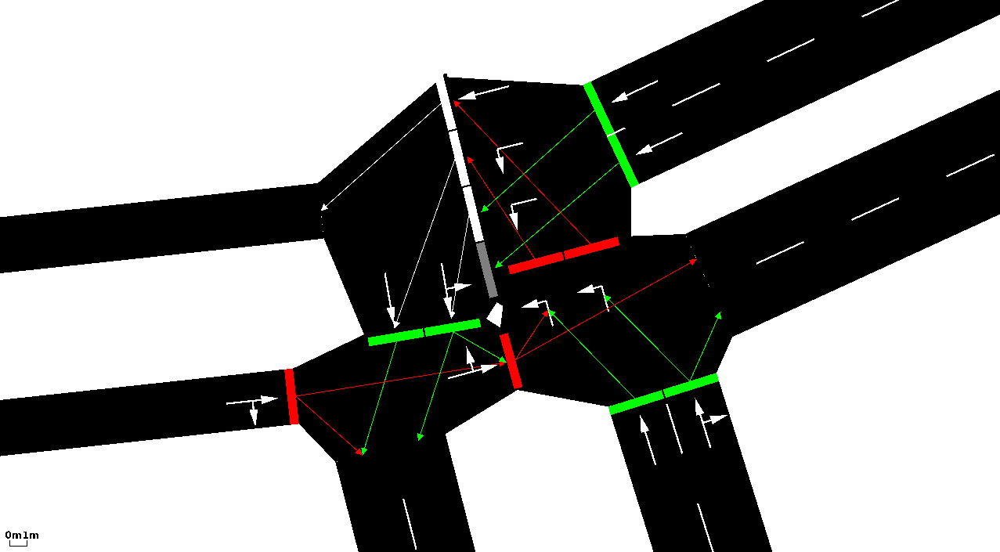
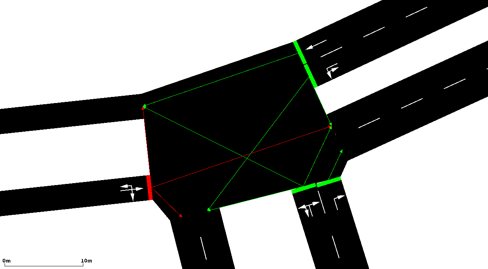

Almost all examples within the distribution were made by hand. For doing this, you need at least two files: one file for nodes and another one for the streets between them. Please notice that herein, "node" and "junction" mean the same as well as "edge" and "street" do (see also Glossary). Besides defining the nodes and edges, you can also join edge attributes by type and set explicit connections between edges or lanes. We will describe how each of these four file types should look like in the following chapters. Further information on road networks may be also found in the SUMO Road Networks description.
After you have generated the files as described below - you need at least the edges and the nodes-files, using type and/or a connections file is optional - you should run NETCONVERT to build the network. If you only use edges and nodes, stored in "MyEdges.edg.xml" and "MyNodes.nod.xml" respectively, the call should look like:
netconvert --node-files=MyNodes.nod.xml --edge-files=MyEdges.edg.xml \ --output-file=MySUMONet.net.xml
If you also use connections and types the call is:
netconvert --node-files=MyNodes.nod.xml --edge-files=MyEdges.edg.xml \ --connection-files=MyConnections.con.xml --type-files=MyTypes.typ.xml \ --output-file=MySUMONet.net.xml
The options used here, including their abbreviations, are documented on the NETCONVERT manual page.
Maybe your edge definitions are incomplete or buggy. If you still want to import your network, you can try passing --ignore-errors to NETCONVERT. In this case, edges which are not defined properly, are omitted, but NETCONVERT tries to build the network anyway. You may also flip the network around the horizontal axis. Use option --flip-y-axis for this.
The structures of the files described in the following are also available as XML Schema Definitions:
- nodes files: http://sumo.sourceforge.net/xsd/nodes_file.xsd
- edges files: http://sumo.sourceforge.net/xsd/edges_file.xsd
- types files: http://sumo.sourceforge.net/xsd/types_file.xsd
- connections files: http://sumo.sourceforge.net/xsd/connections_file.xsd
Contents |
Node Descriptions
| Filename extension | .nod.xml |
| Type of content | Nodes (intersections/junctions) |
| Open format? | Yes |
| SUMO specific? | Yes |
| XML Schema | nodes_file.xsd |
Within the nodes-files, normally having the extension ".nod.xml" (see Known Extensions), every node is described in a single line which looks like this: <node id="<STRING>" x="<FLOAT>" y="<FLOAT>" [type="<TYPE>"]/> - the straight brackets ('[' and ']') indicate that the parameter is optional. Each of these attributes has a certain meaning and value range:
| Attribute Name | Value Type | Description |
|---|---|---|
| id | id (string) | The name of the node |
| x | float | The x-position of the node on the plane in meters |
| y | float | The y-position of the node on the plane in meters |
| type | enum ( "priority", "traffic_light", "right_before_left", "unregulated" ) | An optional type for the node |
If you leave out the type of the node, it is automatically guessed by NETCONVERT but may not be the one you intentionally thought of. The following types are possible, any other string is counted as an error and will yield in a program stop:
- priority: Vehicles on a low-priority edge have to wait until vehicles on a high-priority edge have passed the junction.
- traffic_light: The junction is controlled by a traffic light.
- right_before_left: Vehicles will let vehicles coming from their right side pass.
- unregulated: The junction is completely unregulated - all vehicles may pass without braking; this may yield in additional incidents, of course
When writing your nodes-file, please do not forget to embed your node definitions into an opening and a closing "tag". A complete file should like the example below, which is the node file "cross3l.nod.xml" for the examples "<SUMO_HOME>/data/examples/netbuild/types/cross_usingtypes/" and "<SUMO_HOME>/data/examples/netbuild/types/cross_notypes/" example.
<nodes> <!-- The opening tag --> <node id="0" x="0.0" y="0.0" type="traffic_light"/> <!-- def. of node "0" --> <node id="1" x="-500.0" y="0.0" type="priority"/> <!-- def. of node "1" --> <node id="2" x="+500.0" y="0.0" type="priority"/> <!-- def. of node "2" --> <node id="3" x="0.0" y="-500.0" type="priority"/> <!-- def. of node "3" --> <node id="4" x="0.0" y="+500.0" type="priority"/> <!-- def. of node "4" --> <node id="m1" x="-250.0" y="0.0" type="priority"/> <!-- def. of node "m1" --> <node id="m2" x="+250.0" y="0.0" type="priority"/> <!-- def. of node "m2" --> <node id="m3" x="0.0" y="-250.0" type="priority"/> <!-- def. of node "m3" --> <node id="m4" x="0.0" y="+250.0" type="priority"/> <!-- def. of node "m4" --> </nodes> <!-- The closing tag -->
As you may notice, only the first node named "0", which is the node in the middle of the network, is a traffic light controlled junction. All other nodes are uncontrolled. You may also notice, that each of both ends of a street needs an according node. This is not really necessary as you may see soon, but it eases the understanding of the concept: every edge (street/road) is a connection between two nodes (junctions).
For traffic light nodes, NETCONVERT generates a default traffic light program. The simulation can load additional programs which may be used instead.
You can load multiple node files at the same time by giving a comma-separated list of file names on the command line. In a configuration file you can use a space separated list as well.
Joining Nodes
Sometimes your network may contain nodes which are very close together forming a big cluster. This happens frequently when Importing Networks from OpenStreetMap. NETCONVERT supports the option --junctions.join to find such clusters and join them into a big and well shaped junction. You can control the joining algorithm by supplying the option --junctions.join-dist <FLOAT> which sets a search distance for finding clusters.
More fine grained control over joining can be achieved by using the following syntax within a nodes-file
<nodes> <join nodes="id0 id23 id24"/> <joinExclude nodes="id13 id17"/> </nodes>
This will cause the nodes id0,id23 and id24 to be joined into a single junction. It will also prevent the nodes id13 and id17 from being joined. The joinExclude-tag is only usefull together with the option --junctions.join but the join-tag can also be used all by itself. Nodes to be excluded from joining can also be specified via the option --junctions.join-exclude id,[id]+.
After merging nodes, the lane-to-lane connections are recalculated. You can override them by resorting to a 2-step process:
# 1. Merging the junctions.
netconvert --sumo-net-file berlin-separated-junctions.net.xml \
--output-file berlin-joined-junctions.net.xml \
--junctions.join
# 2. Resetting the connections.
netconvert --sumo-net-file berlin-joined-junctions.net.xml \
--output-file berlin-with-fixed-connections.net.xml \
--connection-files berlin-new-connections.con.xml
See #Connection Descriptions on how to define connections in *.con.xml format.
When loading networks with defined connections, the results of joining nodes may be quite surprising. Please note the - quite pathologic - network on the left side and compare it to the one on the right. You may note some big differences in lane-to-lane connections, especially for the edge coming from the south.  
{kind=link}
{kind=link}
The reason is that during joining, edges are subsequently merged, and the connections are tried to be kept. In the case of the straight connection on the left lane of the road from south, it is propagated along the intersection - along all four edges that are lying within the intersection - yielding in a further right-turning connection.
For avoiding surprises like this, you should join the nodes, first. Then, set the connections.
If you use the option --junctions.join during OSM import, the connections are guessed based on the joined junctions and no pathologies should occur
Edge Descriptions
| Filename extension | .edg.xml |
| Type of content | Edges (roads/streets) |
| Open format? | Yes |
| SUMO specific? | Yes |
| XML Schema | edges_file.xsd |
Within the edges file, each description of a single edge looks like this: <edge id="<STRING>" from="<NODE_ID>" to="<NODE_ID>" [type="<STRING>"] [numLanes="<INT>"] [speed="<FLOAT>"] [priority="<UINT>"] [length="<FLOAT>"] [shape="<2D_POINT>[ <2D_POINT>]*"] [spreadType="center"] [allow="<VEHICLE_CLASS>[ <VEHICLE_CLASS>]*"] [disallow="<VEHICLE_CLASS>[ <VEHICLE_CLASS>]*"]/>.
The origin and the destination nodes are defined using their IDs (from="<NODE_ID>" to="<NODE_ID>"). Each edge is unidirectional and starts at the "from"-node and ends at the "to"-node. If a name of one of the nodes can not be dereferenced (because they have not been defined within the nodes file) an error is generated. To avoid the stop of further netconversion in such cases, you may start NETCONVERT with the option --ignore-errors.
For each edge, some further attributes should be supplied, being the number of lanes the edge has (numLanes), the maximum speed allowed on the edge speed. Furthermore, the priority may be defined optionally.
All edge values - beside the length in fact - may either be given for each edge using according attributes or you can omit them by giving the edge a "type". In this case, you should also write a SUMO edge type file. A type with this name should of course be within the used type file, otherwise an error is reported. Even if you supply a type, you can still override the type's values by supplying any of the parameter allow, disallow, numLanes, priority and speed. You may also leave the edge parameter completely unset. In this case, default-values will be used and the edge will have a single lane, a default (unset) priority and the maximum allowed speed on this edge will be 13.9m/s being around 50km/h. The length of this edge will be computed as the distance between the starting and the end point.
As an edge may have a more complicated geometry, you may supply the edge's shape within the shape attribute. If the length of the edge is not given otherwise, the distances of the shape elements will be summed. The information spreadType="center" forces NETCONVERT to spread lanes to both sides of the connection between the begin node and the end node or from the list of lines making up the shape. If not given, lanes are spread to right, as default.
Let's list an edge's attributes again:
| Attribute Name | Value Type | Description |
|---|---|---|
| id | id (string) | The name of the edge |
| from | referenced node id | The name of a node within the nodes-file the edge shall start at |
| to | referenced node id | The name of a node within the nodes-file the edge shall end at |
| type | referenced type id | The name of a type within the SUMO edge type file |
| numLanes | int | The number of lanes of the edge; must be an integer value |
| speed | float | The maximum speed allowed on the edge in m/s; must be a floating point number (see also "Using Edges' maximum Speed Definitions in km/h") |
| priority | int | The priority of the edge |
| length | float | The length of the edge in meter |
| shape | List of positions; each position is encoded in x,y (do not separate the numbers with a space!) in meters | The start and end node are omitted from the shape definition; an example: <edge id="e1" from="0" to="1" shape="0,0 0,100"/> describes an edge that after starting at node 0, first visits position 0,0 than goes one hundred meters to the right before finally reaching the position of node 1 |
| spreadType | enum ( "right", "center" ) | The description of how to spread the lanes; "center" spreads lanes to both directions of the shape, any other value will be interpreted as "right" |
| allow | list of vehicle classes | Explicitly allows the given vehicle classes (not given will be not allowed). Vehicle classes must be separated using ' '. |
| disallow | list of vehicle classes | Explicitly disallows the given vehicle classes (not given will be allowed). Vehicle classes must be separated using ' '. |
The priority plays a role during the computation of the way-giving rules of a node. Normally, the allowed speed on the edge and the edge's number of lanes are used to compute which edge has a greater priority on a junction. Using the priority attribute, you may increase the priority of the edge making more lanes yielding in it or making vehicles coming from this edge into the junction not wait.
Also the definitions of edges must be embedded into an opening and a closing tag and for the example "<SUMO_HOME>/data/examples/netbuild/types/cross_notypes/" the whole edges-file looks like this ("cross3l.edg.xml"):
<edges> <edge id="1fi" from="1" to="m1" priority="2" numLanes="2" speed="11.11"/> <edge id="1si" from="m1" to="0" priority="3" numLanes="3" speed="13.89"/> <edge id="1o" from="0" to="1" priority="1" numLanes="1" speed="11.11"/> <edge id="2fi" from="2" to="m2" priority="2" numLanes="2" speed="11.11"/> <edge id="2si" from="m2" to="0" priority="3" numLanes="3" speed="13.89"/> <edge id="2o" from="0" to="2" priority="1" numLanes="1" speed="11.11"/> <edge id="3fi" from="3" to="m3" priority="2" numLanes="2" speed="11.11"/> <edge id="3si" from="m3" to="0" priority="3" numLanes="3" speed="13.89"/> <edge id="3o" from="0" to="3" priority="1" numLanes="1" speed="11.11"/> <edge id="4fi" from="4" to="m4" priority="2" numLanes="2" speed="11.11"/> <edge id="4si" from="m4" to="0" priority="3" numLanes="3" speed="13.89"/> <edge id="4o" from="0" to="4" priority="1" numLanes="1" speed="11.11"/> </edges>
Within this example, we have used explicit definitions of edges. An example for using types is described in the chapter Type Descriptions.
There are some constraints about the streets' ids. They must not contain any of the following characters: '_' (underline - used for lane ids), '[' and ']' (used for enumerations), ' ' (space - used as list divider), '*' (star, used as wildcard), ':' (used as marker for internal lanes).
Defining Allowed Vehicle Types per Lane
You may allow/forbid explicite vehicle classes to use a lane. The information which vehicle classes are allowed on a lane may be specified within an edges descriptions file by embedding the list of lanes together with vehicle classes allowed/forbidden on them into these edge's lanes. Assume you want to allow only busses to use the leftmost lane of edge "2si" from the example above. Simply change this edge's definition into:
... previous definitions ...
<edge id="2si" from="m2" to="0" priority="3" numLanes="3" speed="13.89">
<lane id="2" allow="bus"/>
<edge>
... further definitions ...
If you would like to disallow passenger cars and taxis, the following snipplet would do it:
... previous definitions ...
<edge id="2si" from="m2" to="0" priority="3" numLanes="3" speed="13.89">
<lane id="2" disallow="passenger taxi"/>
<edge>
... further definitions ...
The definition of a lane contains by now the following attributes:
| Attribute Name | Value Type | Description |
|---|---|---|
| id | int | The enumeration id of the lane (0 is the rightmost lane, <NUMBER_LANES>-1 is the leftmost one) |
| allow | list of vehicle classes | Explicitly allows the given vehicle classes (not given will be not allowed). Vehicle classes must be separated using ' '. |
| disallow | list of vehicle classes | Explicitly disallows the given vehicle classes (not given will be allowed). Vehicle classes must be separated using ' '. |
See "Vehicle Classes" for further information about allowed vehicle classes and their usage.
Road Segment Refining
Normally, each edge has a certain number of lanes; road widenings are defined using consequent edges. Though, in some cases, it is more comfortable to set up a single edge and change the number of its lanes along its length.
This is possible using "split" - a subelement of an XML-edge definition after 02.09.2009. A split may be given as following:
... previous definitions ...
<edge id="2si" from="m2" to="0" priority="3" numLanes="3" speed="13.89">
<split pos="30" lanes="0 1"/>
<edge>
... further definitions ...
What happens here is the following: 30meters from its begin (pos="30") the edge is split, inserting a node named <EDGE_ID>.<POSITION>. Until this node, the edge includes all lanes. After this node, only the lanes given in the lanes attribute are inserted. This yields in two edges which replace the initial one and the second edge contains only two lanes.
The most common usage example is the other way round: lanes must be added, not removed along a road. The following snipplet shows the by example:
... previous definitions ...
<edge id="2si" from="m2" to="0" priority="3" numLanes="3" speed="13.89">
<split pos="0" lanes="0 1"/>
<split pos="30" lanes="0 1 2"/>
<edge>
... further definitions ...
There are two things to note:
- In the road definition, we use the maximum lane number (3)
- We add an "split" at position 0; in this case, no node is built, but the lane number is applied to the edge directly.
The definition of a split uses the following attributes:
| Attribute Name | Value Type | Description |
|---|---|---|
| pos | float | The position along the edge at which the split shall be done (in m); if a negative position is given, the split is inserted counting from the end of the edge. |
| lanes | list of lane ids (ints) | Information which lanes should exist after the split |
Edge Priorities
The edge priority is a hint for determining which of the incoming edges will be the higher prioritised one if the intersection it is incoming into is a priority junction. If not given, other edge attributes are used. Given two edges, the following comparison is done to determine whether one is higher prioritised:
if (e1->getPriority() != e2->getPriority()) {
return e1->getPriority() > e2->getPriority();
}
if (e1->getSpeed() != e2->getSpeed()) {
return e1->getSpeed() > e2->getSpeed();
}
return e1->getNumLanes() > e2->getNumLanes();
This means that the priority information is evaluated, first. Then the speed information, then the lane number.
Type Descriptions
| Filename extension | .typ.xml |
| Type of content | Edge Types |
| Open format? | Yes |
| SUMO specific? | Yes |
| XML Schema | types_file.xsd |
As mentioned, edge types are meant to be used to ease the definition of edges. Each description of an edge should include information about the number of lanes, the maximum speed allowed on this edge and optionally this edge's priority and its allowed and disallowed vehicle classes. See SUMO edge type file for a complete description of edge types and the format of those files.
The attributes of a type are of course exactly the same as for edges themselves. The information about the nodes the edge starts and ends at is not given within the types' descriptions. They can only be set within the edge's attributes. Here's an example on referencing types in edge definitions:
<edges> <edge id="1fi" from="1" to="m1" type="b"/> <edge id="1si" from="m1" to="0" type="a"/> <edge id="1o" from="0" to="1" type="c"/> <edge id="2fi" from="2" to="m2" type="b"/> <edge id="2si" from="m2" to="0" type="a"/> <edge id="2o" from="0" to="2" type="c"/> <edge id="3fi" from="3" to="m3" type="b"/> <edge id="3si" from="m3" to="0" type="a"/> <edge id="3o" from="0" to="3" type="c"/> <edge id="4fi" from="4" to="m4" type="b"/> <edge id="4si" from="m4" to="0" type="a"/> <edge id="4o" from="0" to="4" type="c"/> </edges>
The according types file looks like this (see SUMO edge type file):
<types> <type id="a" priority="3" numLanes="3" speed="13.889"/> <type id="b" priority="2" numLanes="2" speed="11.111"/> <type id="c" priority="1" numLanes="1" speed="11.111"/> </types>
As you can see, we have joined the edges into three classes "a", "b", and "c" and have generated a description for each of these classes. Doing this, the generated net is similar to the one generated using the settings described above (example "<SUMO_HOME>/data/examples/netbuild/types/cross_notypes/" ).
Connection Descriptions
| Filename extension | .con.xml |
| Type of content | Connections |
| Open format? | Yes |
| SUMO specific? | Yes |
| XML Schema | connections_file.xsd |
"Connections" describe how a node's incoming and outgoing edges are connected (for example to prohibit left-turns at some junctions). Your can specify connections on the edge level or you can declare in in detail which incoming lane shall be connected to which outgoing lanes. If you leave some connections unspecified NETCONVERT automatically computes the missing information based on heuristics.
It is possible to connect two incoming lanes to the same outgoing lane. This should be avoided because it will probably cause crashes. SUMO vehicles are not aware of the conflicts set up this way. If you have merging lanes in your network, one of them should be a dead end. This way vehicles will merge into the continuing lane as desired.
Explicite setting which Edge / Lane is connected to which
Though guessed if not given, definitions of connections between edges or lanes may be manually set up and given to NETCONVERT using connection files. The connection file specifies which edges outgoing from a junction may be reached by a certain edge incoming into this junction and optionally also which lanes shall be used on both sides.
If you only want to describe which edges may be reached from a certain edge, the definition is: <connection from="<FROM_EDGE_ID>" to="<T0_EDGE_ID>"/>. This tells NETCONVERT not only that vehicles shall be allowed to drive from the edge named <FROM_EDGE_ID> to the edge named <TO_EDGE_ID>, but also prohibits all movements to other edges from <FROM_EDGE_ID>, unless they are specified within this file. Let's repeat the parameters:
| Attribute Name | Value Type | Description |
|---|---|---|
| from | referenced edge id | The name of the edge the vehicles leave |
| to | referenced edge id | The name of the edge the vehicles may reach when leaving "from". If omitted or set to "" the incoming edge will have no connections. |
When using this kind of input, NETCONVERT will compute which lanes shall be used if any of the connected edges has more than one lane. If you also want to override this computation and set the lanes by hand, use the following: <connection from="<FROM_EDGE_ID>" to="<T0_EDGE_ID>" fromLane="<INT_1>" toLane="<INT_2>"/>. Here, a connection from the edge's "<FROM_EDGE_ID>" lane with the number <INT_1> is build to the lane <INT_2> of the edge "<TO_EDGE_ID>". Lanes are counted from the right (outer) to the left (inner) side of the road beginning with 0. Again the parameter:
| Attribute Name | Value Type | Description |
|---|---|---|
| from | referenced edge id | The name of the edge the vehicles leave |
| to | referenced edge id | The name of the edge the vehicles may reach when leaving "from" |
| fromLane | <INT> | the lane index of the incoming lane (numbers starting with 0) |
| toLane | <INT> | the lane index of the outgoing lane (numbers starting with 0) |
| pass | bool | if set, vehicles which pass this (lane-2-lane) connection) will not wait |
If you only wish to remove a connection it may be convenient to use the following xml definition: <delete from="<FROM_EDGE_ID>" to="<T0_EDGE_ID>"/>. The attributes are the same as for the simple connection element:
| Attribute Name | Value Type | Description |
|---|---|---|
| from | referenced edge id | The source edge id of the connection to be removed |
| to | referenced edge id | The destination edge id of the connection to be removed |
| fromLane | referenced lane no | The source lane index of the connection to be removed |
| toLane | referenced lane no | The destination lane index of the connection to be removed |
Note that in basic format (that is, without fromLane and toLane attributes) the defenition deletes all connections from given incoming edge to the given outgoing edge. When fromLane and toLane attributes are provided, only the connection from given lane to given lane is removed.
There are two examples within the distribution. Both use the nodes and edges descriptions from the example located in "<SUMO_HOME>/data/examples/netbuild/types/cross_notypes/". The junction in the center of this example looks like shown within the next figure. We will now call it the "unconstrained network" because all connections and turnarounds are computed using the default values.
{kind=link}
The example <SUMO_HOME>/data/examples/netbuild/connections/cross3l_edge2edge_conns/" shows what happens when one uses connections to limit the number of reachable edges. To do this we built a connections file where we say that the horizontal edges ("1si" and "2si") have only connections to the edges right to them and the edge in straight direction. The file looks like this:
<connections> <connection from="1si" to="3o"/> <connection from="1si" to="2o"/> <connection from="2si" to="4o"/> <connection from="2si" to="1o"/> </connections>
As you may see in the next picture, the horizontal edges within the result network contain no left-moving connections.
{kind=link}
In the second example located in <SUMO_HOME>/data/examples/netbuild/connections/cross3l_laneslane_conns/" we additionally describe which lanes shall be connected. The according connections file says that the connections going straight shall be start at the second lane of the incoming edges:
<connections> <connection from="1si" to="3o" fromLane="0" toLane="0"/> <connection from="1si" to="2o" fromLane="2" toLane="0"/> <connection from="2si" to="4o" fromLane="0" toLane="0"/> <connection from="2si" to="1o" fromLane="2" toLane="0"/> </connections>
The built network looks like this:
{kind=link}
Please do not use both types of connection declarations (those with an lane attribute and those without) for the same from-edge! The behaviour is not verified and tested for these settings.
Setting Connection Priorities
Since version 0.9.6 you can also let vehicles passing a connection between two edges wait for another stream. Let's take another look at "Network with explicit edge-2-edge connections" above. Here, all right-moving vehicles may drive. The following definition within the connections file lets vehicles on vertical edges moving right wait for those which move straight on horizontal edges:
<connections>
<!-- The next four connection definitions are same as in
"Network with explicit edge-2-edge connections" -->
<connection from="1si" to="3o"/>
<connection from="1si" to="2o"/>
<connection from="2si" to="4o"/>
<connection from="2si" to="1o"/>
<!-- now, let's prohibit the vertical connections by the horizontal -->
<!-- prohibit moving right from top to left by straight from right to left -->
<prohibition prohibitor="2si->1o" prohibited="4si->1o"/>
<!-- prohibit moving straight from top to bottom by straight from right to left -->
<prohibition prohibitor="2si->1o" prohibited="4si->3o"/>
<!-- prohibit moving left from top to right by straight from right to left -->
<prohibition prohibitor="2si->1o" prohibited="4si->2o"/>
<!-- prohibit moving right from bottom to right by straight from left to right -->
<prohibition prohibitor="1si->2o" prohibited="3si->2o"/>
<!-- prohibit moving straight from bottom to top by straight from left to right -->
<prohibition prohibitor="1si->2o" prohibited="3si->4o"/>
<!-- prohibit moving left from bottom to right by straight from left to right -->
<prohibition prohibitor="1si->2o" prohibited="3si->1o"/>
</connections>
As one may see, it was necessary to prohibit all connections from a vertical edge by the counter-clockwise straight connection on a horizontal edge because otherwise the vehicles on the horizontal edge want to wait due to right-before-left - rule. The network looks like this:
{kind=link}
The syntax of a prohibition-tag is: <prohibition prohibitor="<PROHIBITING_FROM_EDGE_ID>-><PROHIBITING_TO_EDGE_ID>" prohibited="<PROHIBITED_FROM_EDGE_ID>-><PROHIBITED_TO_EDGE_ID>"/>. This means we define two connections (edge-to-edge), the prohibiting one (prohibitor) and the prohibited (prohibited). Each connection is defined by a from-edge and a to-edge, divided by "->".
Traffic Light Program Definition
Since version 0.13.1 you can load traffic light definitions using the option --tllogic-files. You can easily get examples by loading a sumo.net.xml in NETCONVERT and using option --plain-output-prefix.
Format Specification and Example